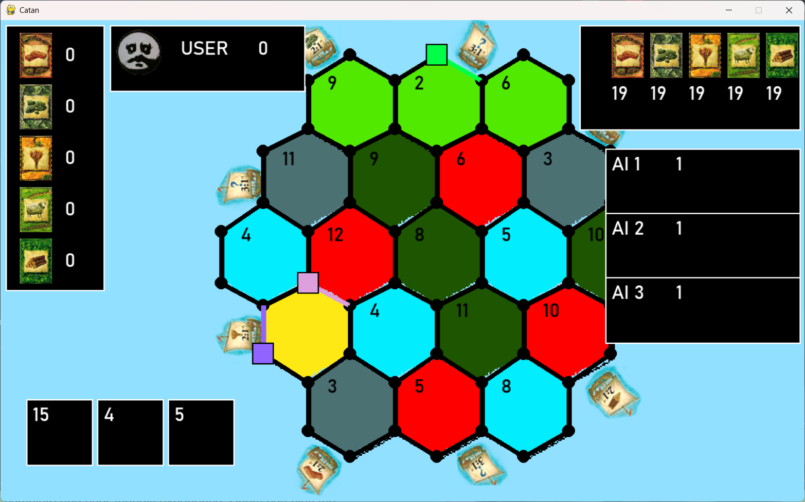
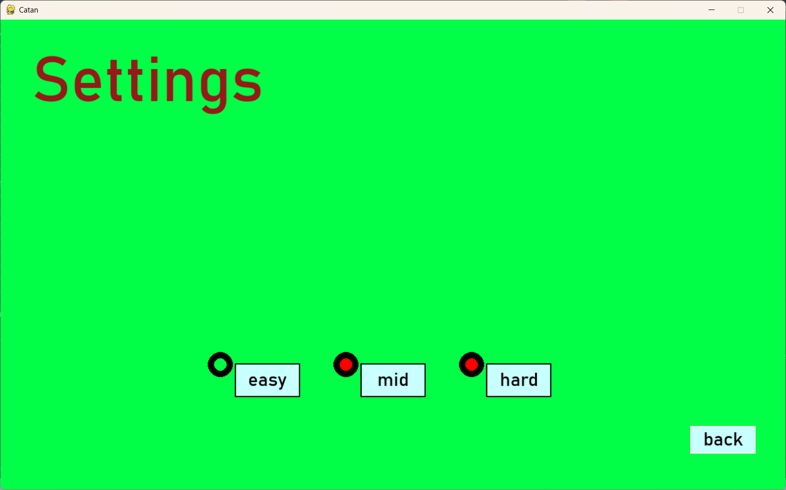
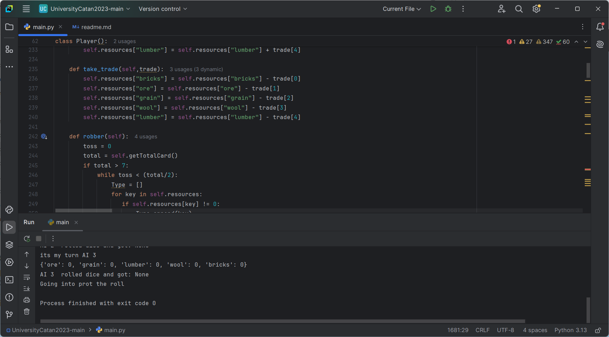
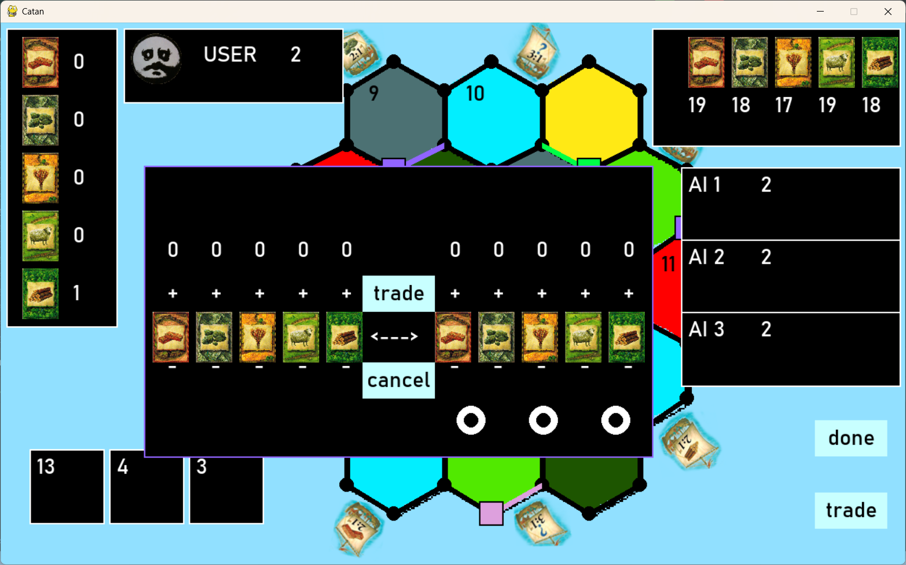

The Program
The game was implemented in Python, using Pygame to handle the GUI, animations, and event interactions. The core gameplay elements included: Random board generation using a custom HexTile class. Turn-based system supporting local multiplayer and AI turns. Victory Points (VP) tracking, city upgrades, road placement, and development cards. Trading system with both AI and bank/harbours. Custom themes and a settings menu for accessibility. Victory/defeat detection and dynamic game progression .The UI was designed for clarity, with interactive buttons, hover effects, and responsive feedback. Players could access a main menu, rules page, settings, and initiate a new game with randomly generated maps.

The AI Component
Although not powered by machine learning like in the Passo with AI project, our AI logic used rule-based decision-making. The AIPlayer class could: Build settlements, roads, and cities based on available resources. Roll dice and gather resources from adjacent hexes. Decide when and how to trade with other players. Use development cards and aim for victory conditions. The AI provided a challenging and consistent gameplay experience while remaining lightweight and easy to debug. We also implemented logic for determining the longest road, largest army, and managing robber mechanics, which the AI could respond to effectively.

Development Process
We followed an Agile development process, working through four structured sprint cycles. Each sprint included planning, implementation, and team-wide reviews. Our major milestones were: Sprint 1: Set up project architecture, implemented Player, GameWindow, and basic HexTile generation. Sprint 2: Introduced the Trade class, dice logic, and refined the UI/UX design. Sprint 3: Integrated the game board with player logic, added resource collection, and developed the victory screen. Sprint 4: Final features like harbours, development cards, longest road logic, and polish/tuning for gameplay balance. We kept track of deliverables through a TODO chart, a Gantt chart, and a priority diagram to manage risks and development bottlenecks.

Challenges and Solutions
The HexTile board logic was the most technically demanding feature due to coordinate mapping, tile interaction, and visual consistency. Additionally, balancing work across multiple modules while aligning with our academic workload posed time-management challenges. To mitigate risk, we: Backed up code frequently. Used Discord and Git for collaboration. Defined fallback strategies for missed tasks. Allowed overlapping contributions across team members
